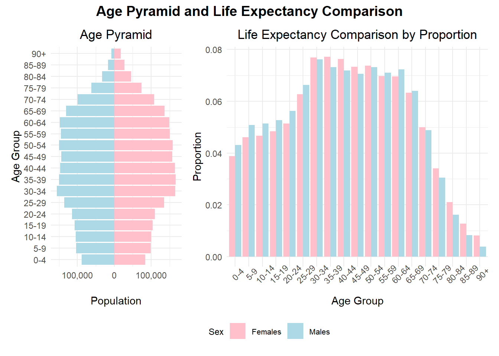
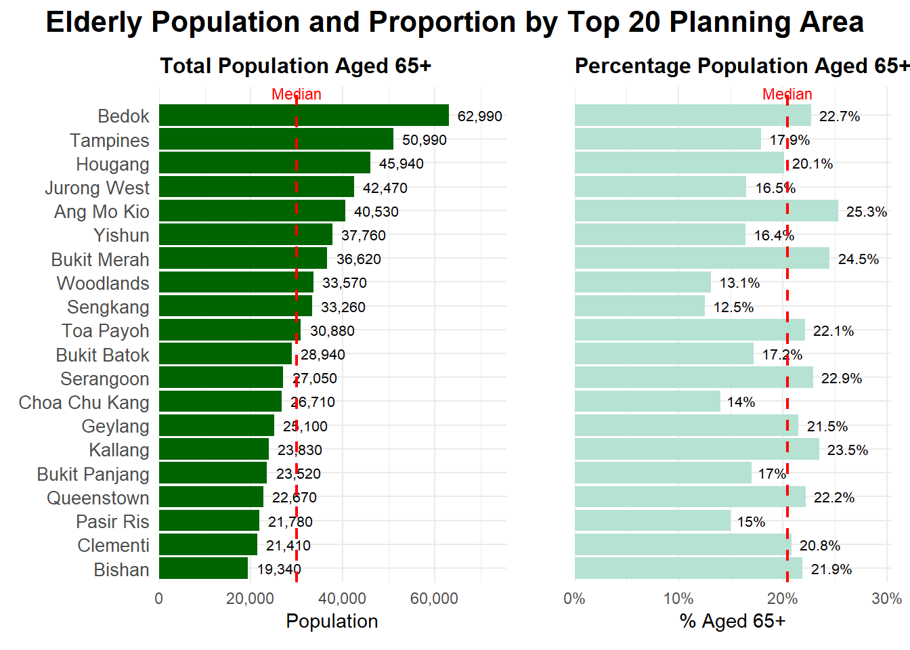
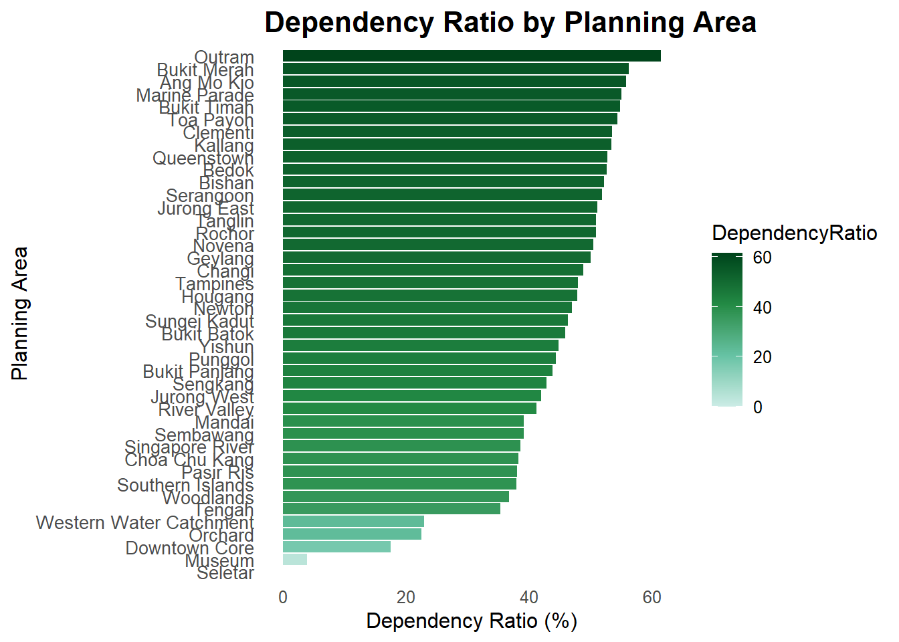

pacman::p_load(tidyverse, patchwork, scales, sf, readr, ggplot2, viridis, plotly)Take-home Exercise 1: Demographic structures and distribution of Singapore in 2024
1 Introduction
1.1 Overview
According to World Health Organisation, economically dependent population is defined as the sum of the population under 15 years of age plus the population 65 years of age and over, for a given country, territory, or geographic area, at a specific point in time.
Economically productive population is defined as the population between 15 and 64 years of age, for the same country, territory, or geographic area, at the same specific point in time.
With this definition, we aim to conduct an exploratory data analysis on the demographic structures and distribution of Singapore in 2024, focusing on the three groups of population, to understand their characteristics for better policy making.
2 Data and Data Pre-processing
2.1 Data Source
The data for Singapore Residents by Planning Area / Subzone, Single Year of Age and Sex, June 2024 are downloaded from Department of Statistics, Singapore (DOS). The dataset comprise 6 variables and 60,424 records.
2.2 Loading data and libraries
Note
It is assumed that you already have pacman package installed. If not, please go ahead install pacman first. The code chunk below uses p_load() of pacman package to check if tidyverse packages are installed in the computer. If they are, then they will be launched into R.
We import Demographic_data.csv into R environment by using read_csv() function of readr package. readr is one of the tidyverse package.
pop_data <- read_csv("data/Demographic_data.csv", show_col_types = FALSE)Under Age, there is also a category “90_and_Over”. For data visualisation, the category is converted to the numeric number “90” instead. The following codes will convert and ensure that all figures under “Age” and “Pop” are numeric.
pop_data <- pop_data %>%
mutate(
Age = if_else(Age == "90_and_Over", "90", Age),
Age = as.numeric(Age),
Pop = as.numeric(Pop)
)3 Exploratory Data Analysis and Insights
3.1 Singapore Population Age Pyramid and Life Expectancy
3.1.1 Data preparation and Visualisation
First we will bin the ages into 5-year blocks for greater visibility by age groups.
# Prepare age group bins
pop_data <- pop_data %>%
mutate(AgeGroup = cut(Age, breaks = c(seq(0, 90, by = 5), Inf),
labels = c(paste(seq(0,85,5), seq(4,89,5), sep="-"), "90+"),
right = FALSE))The population data is grouped by age group and sex and convert the male population such that it is on the left.
# Age Pyramid Data
age_pyramid <- pop_data %>%
group_by(AgeGroup, Sex) %>%
summarise(Population = sum(Pop), .groups = 'drop') %>%
mutate(Population = ifelse(Sex == "Males", -Population, Population))The Age Pyramid data is plotted:
# Plot Age Pyramid
pyramid_plot <- ggplot(age_pyramid, aes(x = Population, y = AgeGroup, fill = Sex)) +
geom_bar(stat="identity") +
scale_x_continuous(
labels = function(x) scales::comma(abs(x)),
breaks = scales::pretty_breaks()) +
labs(title="Age Pyramid", x="Population", y="Age Group") +
scale_fill_manual(values = c("Males" = "lightblue", "Females" = "pink")) +
theme_minimal() +
theme(legend.position="bottom") +
theme(plot.title = element_text(hjust = 0.5)) To compare the life expectancy of males and female for each age group, it is recommended to compute proportions for comparison by age groups due to the different total population numbers in each age group. This helps to standardise the data for equitable comparisons of life expectancy between males and females.
The formula used for males and females respectively is as follows:
Proportion for each age group = Population in each age group / Total population for each sex
For example,
| Age Group | Population | Proportion |
|---|---|---|
| 0-4 | 87,420 | 87,420 / 2,038,810 = 0.043 |
| 5-9 | 103,540 | 103,540 / 2,038,810 = 0.051 |
| … | … | … |
| … | … | … |
| Total | 2,038,810 | 1 |
The code below executes the computation above.
# Life Expectancy Data (Proportional)
life_expectancy <- pop_data %>%
group_by(AgeGroup, Sex) %>%
summarise(Population = sum(Pop), .groups = 'drop') %>%
group_by(Sex) %>%
mutate(Proportion = Population / sum(Population))The 2 plots are combined using the code below.
legend <- cowplot::get_legend(
pyramid_plot + theme(legend.position = "bottom")
)
# Wrap legend as a patchwork element
legend_patch <- wrap_elements(full = legend)
# Title as a patchwork plot (can use plot_annotation + blank)
title_patch <- plot_annotation(
title = "Age Pyramid and Life Expectancy Comparison",
theme = theme(plot.title = element_text(hjust = 0.5, size = 14, face = "bold"))
)
# Combine everything
combined_plot <- pyramid_plot + life_expectancy_plot +
plot_layout(ncol = 2, widths = c(1, 2), guides = "collect") +
plot_annotation(
title = "Age Pyramid and Life Expectancy Comparison",
theme = theme(
plot.title = element_text(hjust = 0.5, size = 14, face = "bold")
)
) &
theme(
legend.position = "bottom",
legend.box = "horizontal",
legend.justification = "center",
legend.box.just = "center",
legend.text = element_text(size = 8),
legend.title = element_text(size = 9)
)
combined_plot
Singapore’s population age pyramid can be described as a constrictive pyramid, which is typical for countries with higher levels of social and economic developments. There are low birth and mortality rates, contributing to an ageing population. The largest population groups belong to ages 30-64, and this results in a reduced economically productive population over time.
When we examine the population’s life expectancy, we see that females have longer life expectancy than males especially from age 70 onwards. However, the life expectancy of females and males both show sharp decline from age 65 onwards, which suggest higher mortality rates for these groups.
With ageing population, it is important to focus on preventive healthcare measures for a healthier population. This enables a later retirement age for older Singaporeans to contribute economically. Given the lower life expectancy of males, more studies can be done to understand their morbidity causes to improve their lifespan.
3.2 Population demographics by Planning Areas
There are 55 Planning Areas (PA) designated by URA where each planning area is served by a town centre and several neighbourhood commercial/shopping centres. Each area is supported by smaller subzones (SZ), which are usually centred on a focal point such as neighbourhood centre or activity node.
Using data visualisation, we can identify the top 10 PA with the highest percentage of population aged 65 and above.
The following codes are used to:
Compute Total population per Planning Area
Compute Total Population aged 65 and above by Planning Areas
Merge both data and compute percentage of Population aged 65 and above by Planning Areas
pop_total <- pop_data %>%
group_by(PA) %>%
summarise(TotalPop = sum(Pop, na.rm = TRUE))
pop_65plus <- pop_data %>%
filter(Age >= 65) %>%
group_by(PA) %>%
summarise(Pop65Plus = sum(Pop, na.rm = TRUE))
pop_summary <- left_join(pop_total, pop_65plus, by = "PA") %>%
mutate(
Pop65Plus = replace_na(Pop65Plus, 0),
PctOver65 = Pop65Plus / TotalPop * 100,
PctOver65 = ifelse(is.nan(PctOver65), NA, round(PctOver65, 1))
)plot_data <- pop_summary %>%
arrange(desc(Pop65Plus)) %>%
slice_head(n = 20) %>%
mutate(
PA = factor(PA, levels = rev(PA)), # reversed so top is highest
LabelPop = format(Pop65Plus, big.mark = ","),
LabelPct = paste0(round(PctOver65, 1), "%")
)
# Step 2: Compute medians
median_pop <- median(plot_data$Pop65Plus, na.rm = TRUE)
median_pct <- median(plot_data$PctOver65, na.rm = TRUE)
# Step 3: Population chart
pop_plot <- ggplot(plot_data, aes(x = Pop65Plus, y = PA)) +
geom_col(fill = "#006400")+
geom_text(aes(label = LabelPop), hjust = -0.2, size = 2.8) +
geom_vline(xintercept = median_pop, color = "red", linetype = "dashed", linewidth = 0.8) +
annotate("text", x = median_pop, y = 21.2, label = "Median", color = "red", size = 3, vjust = 1) +
labs(title = "Total Population Aged 65+", x = "Population", y = NULL) +
theme_minimal() +
theme(
plot.title = element_text(size = 12, face = "bold"),
axis.text.y = element_text(size = 10),
plot.margin = margin(5, 30, 5, 5) # add right margin space
) +
scale_x_continuous(labels = scales::comma, expand = expansion(mult = c(0, 0.2)))
# Step 4: Percentage chart
pct_plot <- ggplot(plot_data, aes(x = PctOver65, y = PA)) +
geom_col(fill = "#b6e2d3") +
geom_text(aes(label = LabelPct), hjust = -0.2, size = 2.8) +
geom_vline(xintercept = median_pct, color = "red", linetype = "dashed", linewidth = 0.8) +
annotate("text", x = median_pct, y = 21.2, label = "Median", color = "red", size = 3, vjust = 1)+
labs(title = "Percentage Population Aged 65+", x = "% Aged 65+", y = NULL) +
theme_minimal() +
theme(
plot.title = element_text(size = 12, face = "bold"),
axis.text.y = element_blank(),
axis.ticks.y = element_blank(),
plot.margin = margin(5, 5, 5, 5) # optional
) +
scale_x_continuous(labels = scales::label_percent(scale = 1), expand = expansion(mult = c(0, 0.2)))
# Step 5: Combine with patchwork
final_chart <- pop_plot + pct_plot +
plot_layout(ncol = 2, widths = c(1.1, 1)) +
plot_annotation(
title = "Elderly Population and Proportion by Top 20 Planning Area",
theme = theme(
plot.title = element_text(hjust = 0.5, face = "bold", size = 16),
plot.subtitle = element_text(hjust = 0.5, size = 11)
)
)
# Step 6: Show plot
final_chart
We download the Singapore’s map shapefile from URA’s Master Plan 2014 Planning Area Boundary.
sg_map <- st_read("data/Map/MP14_PLNG_AREA_WEB_PL.shp")Reading layer `MP14_PLNG_AREA_WEB_PL' from data source
`C:\Users\Belinda\OneDrive - Singapore Management University\Desktop\Visual Analytics\belindalim\ISSS608-VAA\Take-home_Ex\Take-home_Ex01\data\Map\MP14_PLNG_AREA_WEB_PL.shp'
using driver `ESRI Shapefile'
Simple feature collection with 55 features and 12 fields
Geometry type: MULTIPOLYGON
Dimension: XY
Bounding box: xmin: 2667.538 ymin: 15748.72 xmax: 56396.44 ymax: 50256.33
Projected CRS: SVY21Format and Join the computed percentage of Population aged 65 and above by Planning Areas to the map.
sg_map <- sg_map %>%
mutate(PA = toupper(trimws(PLN_AREA_N)))
pop_summary <- pop_summary %>%
mutate(PA = toupper(trimws(PA)))
sg_map_joined <- sg_map %>%
left_join(pop_summary, by = "PA")Creating the plot
31b8e172-b470-440e-83d8-e6b185028602:dAB5AHAAZQA6AE8AUQBCAGoAQQBHAEkAQQBOAHcAQQA1AEEARwBVAEEATgBnAEIAagBBAEMAMABBAE8AQQBBADQAQQBEAGcAQQBaAEEAQQB0AEEARABRAEEAWQBRAEEAdwBBAEcAVQBBAEwAUQBBADUAQQBHAE0AQQBPAFEAQgBpAEEAQwAwAEEAWgBnAEIAbQBBAEQAWQBBAE4AdwBCAGoAQQBHAFEAQQBOAEEAQQB3AEEARABRAEEAWgBRAEEAMgBBAEQAQQBBAAoAcABvAHMAaQB0AGkAbwBuADoATQBRAEEAMwBBAEQAQQBBAE4AZwBBAHgAQQBBAD0APQAKAHAAcgBlAGYAaQB4ADoACgBzAG8AdQByAGMAZQA6AFkAQQBCAGcAQQBHAEEAQQBlAHcAQgA3AEEASABJAEEATABBAEEAZwBBAEcAVQBBAFkAdwBCAG8AQQBHADgAQQBJAEEAQQA5AEEAQwBBAEEAUgBnAEIAQgBBAEUAdwBBAFUAdwBCAEYAQQBIADAAQQBmAFEAQQBLAEEASABBAEEASQBBAEEAOABBAEMAMABBAEkAQQBCAG4AQQBHAGMAQQBjAEEAQgBzAEEARwA4AEEAZABBAEEAbwBBAEgATQBBAFoAdwBCAGYAQQBHADAAQQBZAFEAQgB3AEEARgA4AEEAYQBnAEIAdgBBAEcAawBBAGIAZwBCAGwAQQBHAFEAQQBLAFEAQQBnAEEAQwBzAEEAQwBnAEEAZwBBAEMAQQBBAFoAdwBCAGwAQQBHADgAQQBiAFEAQgBmAEEASABNAEEAWgBnAEEAbwBBAEcARQBBAFoAUQBCAHoAQQBDAGcAQQBDAGcAQQBnAEEAQwBBAEEASQBBAEEAZwBBAEcAWQBBAGEAUQBCAHMAQQBHAHcAQQBJAEEAQQA5AEEAQwBBAEEAVQBBAEIAagBBAEgAUQBBAFQAdwBCADIAQQBHAFUAQQBjAGcAQQAyAEEARABVAEEATABBAEEASwBBAEMAQQBBAEkAQQBBAGcAQQBDAEEAQQBkAEEAQgBsAEEASABnAEEAZABBAEEAZwBBAEQAMABBAEkAQQBCAHcAQQBHAEUAQQBjAHcAQgAwAEEARwBVAEEATQBBAEEAbwBBAEMASQBBAFUAQQBCAHMAQQBHAEUAQQBiAGcAQgB1AEEARwBrAEEAYgBnAEIAbgBBAEMAQQBBAFEAUQBCAHkAQQBHAFUAQQBZAFEAQQA2AEEAQwBBAEEASQBnAEEAcwBBAEMAQQBBAFUAQQBCAEIAQQBDAHcAQQBJAEEAQQBpAEEARgB3AEEAYgBnAEIAQgBBAEcAYwBBAFoAUQBBAGcAQQBEAFkAQQBOAFEAQQByAEEAQwBBAEEAVQBBAEIAdgBBAEgAQQBBAGQAUQBCAHMAQQBHAEUAQQBkAEEAQgBwAEEARwA4AEEAYgBnAEEANgBBAEMAQQBBAEkAZwBBAHMAQQBDAEEAQQBVAEEAQgBqAEEASABRAEEAVAB3AEIAMgBBAEcAVQBBAGMAZwBBADIAQQBEAFUAQQBMAEEAQQBnAEEAQwBJAEEASgBRAEEAaQBBAEMAawBBAEMAZwBBAGcAQQBDAEEAQQBLAFEAQQBzAEEAQwBBAEEAWQB3AEIAdgBBAEcAdwBBAGIAdwBCAHkAQQBDAEEAQQBQAFEAQQBnAEEAQwBJAEEAZAB3AEIAbwBBAEcAawBBAGQAQQBCAGwAQQBDAEkAQQBMAEEAQQBnAEEARwB3AEEAYQBRAEIAdQBBAEcAVQBBAGQAdwBCAHAAQQBHAFEAQQBkAEEAQgBvAEEAQwBBAEEAUABRAEEAZwBBAEQAQQBBAEwAZwBBAHoAQQBDAGsAQQBJAEEAQQByAEEAQQBvAEEASQBBAEEAZwBBAEgATQBBAFkAdwBCAGgAQQBHAHcAQQBaAFEAQgBmAEEARwBZAEEAYQBRAEIAcwBBAEcAdwBBAFgAdwBCAG4AQQBIAEkAQQBZAFEAQgBrAEEARwBrAEEAWgBRAEIAdQBBAEgAUQBBAEsAQQBBAEsAQQBDAEEAQQBJAEEAQQBnAEEAQwBBAEEAYgBBAEIAdgBBAEgAYwBBAEkAQQBBADkAQQBDAEEAQQBJAGcAQQBqAEEARwBZAEEAWgBnAEIAbABBAEQAQQBBAFkAZwBBAHkAQQBDAEkAQQBMAEEAQQBnAEEAQwBBAEEASQBBAEEAagBBAEMAQQBBAFkAZwBCAHkAQQBHAGsAQQBaAHcAQgBvAEEASABRAEEAWgBRAEIAeQBBAEMAQQBBAGIAQQBCAHAAQQBHAGMAQQBhAEEAQgAwAEEAQwBBAEEAYgB3AEIAeQBBAEcARQBBAGIAZwBCAG4AQQBHAFUAQQBDAGcAQQBnAEEAQwBBAEEASQBBAEEAZwBBAEcAZwBBAGEAUQBCAG4AQQBHAGcAQQBJAEEAQQA5AEEAQwBBAEEASQBnAEEAagBBAEcASQBBAE0AdwBBAHcAQQBEAEEAQQBNAEEAQQB3AEEAQwBJAEEATABBAEEAZwBBAEMAQQBBAEkAdwBBAGcAQQBIAE0AQQBkAEEAQgB5AEEARwA4AEEAYgBnAEIAbgBBAEMAQQBBAFoAQQBCAGgAQQBIAEkAQQBhAHcAQQBnAEEASABJAEEAWgBRAEIAawBBAEMAMABBAGIAdwBCAHkAQQBHAEUAQQBiAGcAQgBuAEEARwBVAEEAQwBnAEEAZwBBAEMAQQBBAEkAQQBBAGcAQQBHADQAQQBZAFEAQQB1AEEASABZAEEAWQBRAEIAcwBBAEgAVQBBAFoAUQBBAGcAQQBEADAAQQBJAEEAQQBpAEEARwBjAEEAYwBnAEIAbABBAEgAawBBAE8AUQBBAHcAQQBDAEkAQQBLAFEAQQBnAEEAQwBzAEEAQwBnAEEAZwBBAEMAQQBBAGIAQQBCAGgAQQBHAEkAQQBjAHcAQQBvAEEAQQBvAEEASQBBAEEAZwBBAEMAQQBBAEkAQQBCADAAQQBHAGsAQQBkAEEAQgBzAEEARwBVAEEASQBBAEEAOQBBAEMAQQBBAEkAZwBCAFMAQQBHAFUAQQBjAHcAQgBwAEEARwBRAEEAWgBRAEIAdQBBAEgAUQBBAGMAdwBBAGcAQQBFAEUAQQBaAHcAQgBsAEEARwBRAEEASQBBAEEAMgBBAEQAVQBBAEsAdwBBAGcAQQBHAEkAQQBlAFEAQQBnAEEARgBBAEEAYgBBAEIAaABBAEcANABBAGIAZwBCAHAAQQBHADQAQQBaAHcAQQBnAEEARQBFAEEAYwBnAEIAbABBAEcARQBBAEkAQQBBAG8AQQBEAEkAQQBNAEEAQQB5AEEARABRAEEASwBRAEEAaQBBAEMAdwBBAEMAZwBBAGcAQQBDAEEAQQBJAEEAQQBnAEEARwBZAEEAYQBRAEIAcwBBAEcAdwBBAEkAQQBBADkAQQBDAEEAQQBJAGcAQQBsAEEAQwBBAEEAUQBRAEIAbgBBAEcAVQBBAFoAQQBBAGcAQQBEAFkAQQBOAFEAQQByAEEAQwBJAEEAQwBnAEEAZwBBAEMAQQBBAEsAUQBBAGcAQQBDAHMAQQBDAGcAQQBnAEEAQwBBAEEAZABBAEIAbwBBAEcAVQBBAGIAUQBCAGwAQQBGADgAQQBkAGcAQgB2AEEARwBrAEEAWgBBAEEAbwBBAEMAawBBAEkAQQBBAHIAQQBDAEEAQQBkAEEAQgBvAEEARwBVAEEAYgBRAEIAbABBAEMAZwBBAGMAQQBCAGgAQQBHADQAQQBaAFEAQgBzAEEAQwA0AEEAWQBnAEIAdgBBAEgASQBBAFoAQQBCAGwAQQBIAEkAQQBJAEEAQQA5AEEAQwBBAEEAWgBRAEIAcwBBAEcAVQBBAGIAUQBCAGwAQQBHADQAQQBkAEEAQgBmAEEARwBJAEEAYgBBAEIAaABBAEcANABBAGEAdwBBAG8AQQBDAGsAQQBLAFEAQQBnAEEAQQBvAEEAQwBnAEIAbgBBAEcAYwBBAGMAQQBCAHMAQQBHADgAQQBkAEEAQgBzAEEASABrAEEASwBBAEIAdwBBAEMAdwBBAEkAQQBCADAAQQBHADgAQQBiAHcAQgBzAEEASABRAEEAYQBRAEIAdwBBAEMAQQBBAFAAUQBBAGcAQQBDAEkAQQBkAEEAQgBsAEEASABnAEEAZABBAEEAaQBBAEMAawBBAEMAZwBBAEsAQQBHAEEAQQBZAEEAQgBnAEEAQQA9AD0ACgBzAHUAZgBmAGkAeAA6AA==:31b8e172-b470-440e-83d8-e6b185028602 ### The code
p <- ggplot(sg_map_joined) +
geom_sf(aes(
fill = PctOver65,
text = paste0("Planning Area: ", PA, "\nAge 65+ Population: ", PctOver65, "%")
), color = "white", linewidth = 0.3) +
scale_fill_gradient(
low = "#ffe0b2", # brighter light orange
high = "#b30000", # strong dark red-orange
na.value = "grey90") +
labs(
title = "Residents Aged 65+ by Planning Area (2024)",
fill = "% Aged 65+"
) +
theme_void() + theme(panel.border = element_blank())
ggplotly(p, tooltip = "text")3.3 Insights 1
According to World Health Organisation, economically dependent population is defined as the sum of the population under 15 years of age plus the population 65 years of age and over, for a given country, territory, or geographic area, at a specific point in time.
Economically productive population is defined as the population between 15 and 64 years of age, for the same country, territory, or geographic area, at the same specific point in time.
Dependency ratio measures the average number of economically dependent population per 100 economically productive population, for a given country, territory, or geographic area, at a specific point in time.
Create and sum up the population numbers based on the above definition
Those Age_DR < 15 are “Dependent_0_14”
Those Age_DR >= 65 are “Dependent_65_plus”
Those Age_DR >= 15 & Age_DR <= 64 are “Productive”
pop_data <- read_csv("data/Demographic_data.csv") %>%
mutate(
Age_DR = if_else(Age == "90_and_Over", "90", as.character(Age)),
Age_DR = as.numeric(Age_DR),
Pop_DR = as.numeric(Pop),
AgeGroup_DR = case_when(
Age_DR < 15 ~ "Dependent_0_14",
Age_DR >= 65 ~ "Dependent_65_plus",
Age_DR >= 15 & Age_DR <= 64 ~ "Productive",
TRUE ~ NA_character_
)
)Summarise by PA and AgeGroup
pop_summary_DR <- pop_data %>%
filter(!is.na(AgeGroup_DR)) %>%
group_by(PA, AgeGroup_DR) %>%
summarise(Pop_DR = sum(Pop_DR, na.rm = TRUE), .groups = "drop")Pivot Wide and Calculate Dependency Ratio
pop_wide_DR <- pop_summary_DR %>%
pivot_wider(names_from = AgeGroup_DR, values_from = Pop_DR, values_fill = 0) %>%
mutate(
Dependent_DR = Dependent_0_14 + Dependent_65_plus,
Productive_DR = Productive,
DependencyRatio = round((Dependent_DR / Productive_DR) * 100, 1)
) %>%
filter(Productive_DR > 0) # prevent divide-by-zeroggplot(pop_wide_DR, aes(x = DependencyRatio, y = reorder(PA, DependencyRatio), fill = DependencyRatio)) +
geom_col() +
scale_fill_gradientn(
colours = c("#ccece6", "#66c2a4", "#238b45", "#00441b"), # deeper green gradient
limits = c(min(pop_wide_DR$DependencyRatio), max(pop_wide_DR$DependencyRatio))
) +
labs(
title = "Dependency Ratio by Planning Area",
x = "Dependency Ratio (%)",
y = "Planning Area"
) +
theme_minimal(base_size = 12) +
theme(
panel.grid = element_blank(), # remove gridlines
legend.position = "right", # optional: move legend
plot.title = element_text(size = 16, face = "bold"),
axis.text.y = element_text(size = 10)
) +
coord_cartesian(clip = "off") # avoids label cut-off when length increases
4 Conclusion
4.1 XXXX
5 References
4.1 XXXX
:::::
:::::